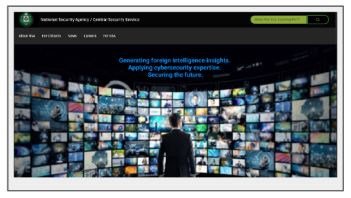
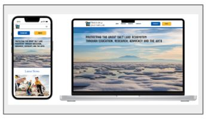

Specializing in Responsive Web Design for Desktop and Mobile Platforms
Richard Mace is a Product Designer specializing in UX/UI Design and Front End Development. Richard enjoy’s solving user problems and envisioning the end product by generating insights. In so doing, design engaging, captivating digital answers that improve user experience and performance.
My Recent Work
User Research
Approach research by understanding the market, defining the audience and ideate the potential solutions.
User Empathy
In defning user empathy by creating a roadmap and establishing the user needs.
Qualitative Interviews
By obtaining qualitative interviews establish usability, meet accessibility needs and ensure a delightful solution.

Government Website Redesign - NSA.GOV
To help the average U.S. Citizen find information quickly and efficiently with a whole new redesign. The NSA secures the privacy of all U.S. citizens. Uncovered the solutions by using specialized Responsive Web Design in both Desktop and Mobile applications.

Non-profit Organization Redesign - The Friends of the Great Salt Lake Website
A whole new look that boosts the visual design concepts of The Friends of Great Salt Lake website. Providing more clarity on the issues at hand and digestible content about the organization's purpose/goals. A virtually developed redesign that captures that audience.
Contact
I’d love to share my work with you and answer any questions you may have.